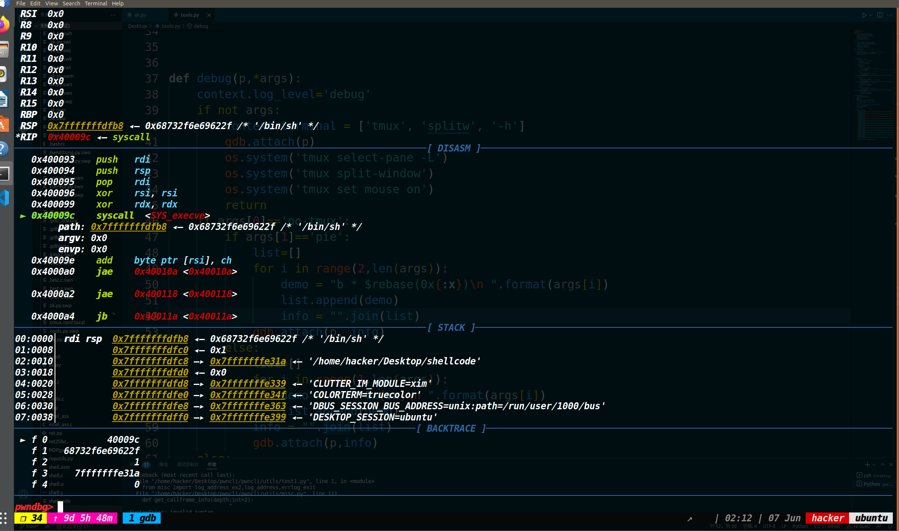

用汇编语言构造简单的shellcode（64位&&32位）以及将汇编语言转换成机器码的方法
1、什么是shellcode
这里我谈谈自己的理解，shellcode就是一段可执行的机器码，如果可以让CPU从shellcode首字节开始往下执行，那么shellcode执行完毕就会达到编写者想要的目的（shellcode不一定非要是获取shell的机器码），至少初学者先这么理解应该是没什么问题的。
2、怎么用汇编语言构造简单的shellcode(64位)
前置知识：
① 64位寄存器传参的前三个寄存器分别是rdi,rsi,rdx
②64位系统调用号通过查看linux上的/usr/include/x86_64-linux-gnu/asm/unistd_64.h文件就可以获取
③系统调用号放入rax寄存器，然后syscall就可以执行对应的系统调用函数
首先我们的目的是执行execve(“/bin/sh”,0,0) 从而获取shell
因此，我们需要干三件事情
①因为程序本来是没有这个execve函数的，但是我们现在要凭空给它造一个，因此这里系统调用execve（你可以理解为，执行syscall指令之前将rax装成对应的系统调用号，就可以执行对应的系统调用。
②将第一个参数存入"/bin/sh"
③将第二个、第三个参.数存入0
我们要做的是在系统调用execve之前，去把需要的参数都存进去。
xor rdx,rdx
xor rsi,rsi #此时去把rsi，rdx两个寄存器都存成0，至于这里为什么不用mov rdx,0和mov rsi,0。
主要是避免出现00字符来截断，不过话说，据我了解，平常如果是直接读入字符串的话，00也不会产生截断的效果，只有用strcpy这类函数的时候，才考虑00截断。不过那为什么我们平常写shellcode还是要尽量选择xor rsi,rsi而不是mov rsi,0呢，是因为xor rsi,rsi所需要的字节数更少。
这个具体截断的话，可以参考如下两张图片
图片出自CTF中常见的C语言输入函数截断属性总结 | Clang裁缝店 (xuanxuanblingbling.github.io)
接着是准备要把第一个参数存入rdi，以前我一直以为是rdi的写成/bin/sh对应的ascii码，可是现在才明白，我们只是要把/bin/sh对应的ascii码的*地址*给rdi即可 传参的时候，要调用的函数会自己去这个地址里找到对应的/bin/sh。
因此这步要写成
xor rdi,rdi |
这里我还是想详细说一下，因为当初我在这里迷了很久。rsp的值和rsp的内容是两码事，你可以把他们理解成c语言中的指针p和*p的关系。rsp的值，就是栈顶内存单元的地址；rsp的内容，就是栈顶的内存单元中的内容。此时rsp的内容才是0x68732f2f6e69622f，而现在只是把栈顶的地址赋给了rdi的值。
现在也才是我们要的效果，rdi里面装的是/bin//sh的地址，而非参数本身。
这里有两点需要注意：
①这个0x68732f2f6e69622f是/bin//sh对应的ascii码。并且他是倒着存的，因为asm在把我们写的汇编语言转换成机器码的时候，会因为小端序的原因将输入的内容给倒过来。别的机器码我们不用担心，但是我们输入的字符串，需要手动先给倒过来一次，这样等到汇编语言转换成机器码的时候，再倒过来一次，程序处理字符串的时候，就会拿到真正的参数/bin//sh，而非hs//nib/。
②0x68732f2f6e69622f中间这里出现了两2f(也就是两个/)，因为这里要填充够八个字节（64位程序中，一个内存单元就只能装八个字节）
为了达到上述的效果，我们还可以这么写。
xor rdi,rdi |
有好几处内容都变了。
首先是原本xor rdi,rdi下面的push rdi没了，咦？难道我们不需要去在栈中存入一个零，以来声明字符串的结束么？我们依然需要一个00来去截断字符串，但是此刻你还会发现0x68732f6e69622f中间的两个2f现在就变成了一个2f（此时参数是/bin/sh） 难道此时不需要去填充够八字节么。是的不需要了，程序发现了我们这个内存单元的内容不够八字节，它会自己帮我们添加一个00上去以来凑齐八字节，并且这个00同时声明了字符串的结束。
因此我们不但不需要push一个0，并且还不用去填充八字节，程序帮我们补的00，正好可以去代替原本应该push的0。（值得一提的是如果我们内存单元只有六个字节，那么程序依然会帮我们补全到八个字节，也就是填充两个字节的00）
最后的变化就是把原本的lea rdi,[rsp]换成了一个push rsp ;pop rdi**（把rsp的值压入栈顶，也就是把rsp的值存入了栈顶内存单元的内容中，再把栈顶的内存单元的内容弹给rdi的值，也就完成了把rsp的值赋给了rdi的值）（在这里一定要区分清楚值与内容的关系）**这样做的好处是什么？这样写的字节更少，原本lea rdi,[rsp]是四个字节
即使换成mov rdi,rsp

也还是三个字节。但是我们为了达到同样的效果，使用push rsp;pop rdi两个指令，一共也才两个字节。
因为很多有难度的题目都会限制shellcode的长度，因此我们所选的shellcode，是越短越好。
最后，就是将execve对应的系统调用号放入rax中，然后syscall即可
那剩下的汇编就是
xor rax,rax |
然后把刚才所写的三部分汇总一下并且精简一下最后仅仅用了0x1e个字节。
xor rax,rax |
此时只要执行这个shellcode，就可以去拿到shell了。
注意: 由于压入参数/bin/sh的时候最后一个默认补了00，导致碰见memcpy等函数shellcode会被截断，这里可以用/bin//sh来代替，更新过的shellcode如下
xor rax,rax |
这里拿一道BUUCTF上的mrctf2020_shellcode来演示一下
使用IDA分析之后（这道题无法F5，不过可以看汇编来分析），发现我们输入的内容直接就被执行了，因此什么都不用考虑，这道题仅仅就是考察我们64位汇编编写shellcode的能力。利用pwntools中的asm把刚才写好的汇编内容转换成机器码，然后发送过去即可获取shell。
from pwn import * |
3、怎么用汇编语言构造简单的shellcode（32位）
前置知识：
①对于32位程序而言，我们最后系统调用采用的并不是syscall，而是int 0x80
②我们传参的前三个寄存器分别是ebx,ecx,edx
③32位的execve系统调用号是11，并且存储系统调用后的寄存器是eax。32位的系统调用号可以查看这个文件/usr/include/x86_64-linux-gnu/asm/unistd_32.h
然后剩下的思路是和64位汇编构造shellcode的思路是一样的。
首先是
xor ecx,ecx |
清空两个参数为0的寄存器
然后是
xor ebx,ebx |
此时把参数/bin/sh压入栈，最开始push ebx是先压入栈中一个0，用来字符串截断。最后将esp指向的地址赋给了ebx，此时ebx的值就是/bin/sh的地址。
此时栈中的情况就是这样，/bin/sh与/bin//sh的效果一样，至于为什么要存入字符串的时候，要反着写，在64位汇编编写shellcode的时候，已经解释过了，这里就不再重复。
最后是
xor eax,eax |
现在是把系统调用号存进去并且进行了系统调用
最后把这三部分结合一下效果如下。
xor ecx,ecx |
4、手写open，read，write的shellcode
遇见pwn题开启了沙箱保护的话，如果禁用了execve、system函数，但没有开启NX保护的话，可以采用orw的方式来读出flag。
首先我们要执行的如下的代码：
open(flag_addr,0) |
接下来，就开始用汇编来实现上面的内容(先写64位的)。
open(flag_addr,0) |
接下来是32位的，32位和64位编写的区别主要是寄存器不同和系统调用号不同，另外就是再压入参数’flag’的时候，32位的需要提前压入00用来截断字符串（64位不需要push 0的原因是存入的’flag’不足8字节，会自动添加00来截断）
push 0 |
5、如何调试或测试写好的汇编代码？
因为在编写shellcode的时候，并不是一帆风顺的，如果出现了错误只靠眼睛看的话效果不大，因此我们可以把汇编代码编译为可执行文件，用gdb来调试。
先用touch shellcode.asm 命令创建一个shellcode.asm文件(asm文件是使用汇编语言编写的源代码文件)
然后vim shellcode.asm 去编辑这个文件
将汇编的内容写入这个文件里面。
（同时在文件的开头写上下面三行的内容，其作用可以自行参考【转】linux汇编.section .text .data 与.global - 比较懒 - 博客园 (cnblogs.com)
section .text |
最后的写入的内容应该是
section .text |
然后用nasm -f elf64 shellcode.asm这个命令去编译刚才写的那个文件（会生成一个.o文件）
然后可以用 objdump -d shellcode.o （直接查看的话，是看的AT&T语法的汇编，如果想看intel语法的话加上-M intel参数即可
此时就获取到了汇编指令的机器码。
不过由于目前生成的仅仅是.o文件，没有被链接过，还无法执行或者调试。因此我们需要链接一下。
输入命令ld -s -o shellcode shellcode.o 即可
此时执行生成的shellcode就成功了（如下图）
如果想调试的话，直接gdb挂上，然后start就可以开始调试我们写的shellcode了（如下图）

补充：推荐一个在线汇编指令转机器码的网站 here